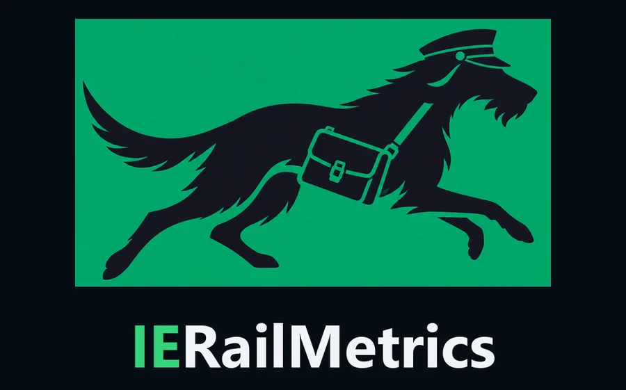
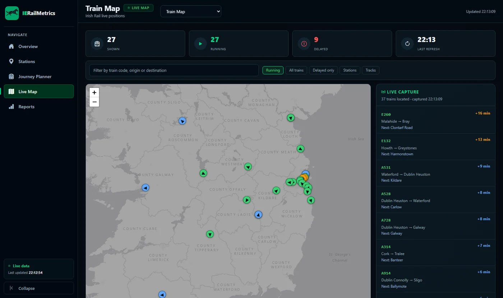
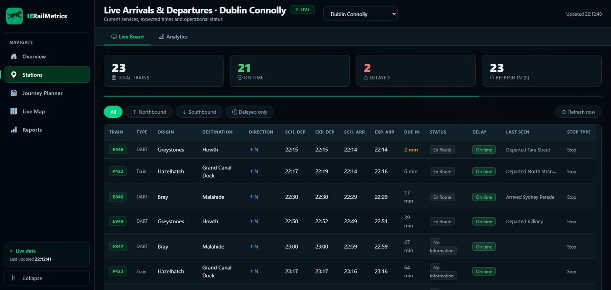

Project 01 — Full Stack · Real-time
Irish Rail Delay Tracker
Real-time monitoring and analytics platform for the Irish Rail network.

About the project
RailDelayTracker (branded IERailMetrics in the browser) polls the public Irish Rail realtime API around the clock, keeps a history of every delay it observes in PostgreSQL, and turns that history into dashboards: which stations, routes, hours and destinations run late, how often, and by how much.
Alongside the analytics it offers live departure boards, a station-to-station journey planner and a live map of every train in the country. It started with the DART coastal line from Dublin Connolly and now also tracks the Heuston side of the network.
Goal
Answer how punctual the network really has been with data instead of anecdotes, while staying cheap to run: a single Spring Boot jar that collects, stores, aggregates and serves the UI.
What it does
Network analytics
Delay rate, hourly pattern, worst trips, routes and a station ranking for a chosen period and scope (General, Connolly or Heuston), refreshed live over server-sent events.
Live station board
Departures for the next 90 minutes refreshed every 30 seconds, with direction tabs and a delayed-only filter.
Journey planner and live map
Joins the live boards of two stations by train code and date. The Leaflet map shows every train coloured by delay and rotated to its heading.
Built to stay cheap
Only delay changes are persisted, dashboards read daily aggregate tables, and every cache, pool and HTTP call is bounded.
Tech stack
Backend
Persistence
Frontend
Operations & quality
Screenshots


Every commit that passes CI on main is built, tested and deployed automatically, with a health check and rollback.